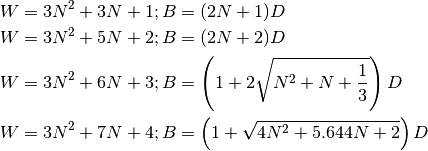
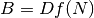
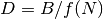
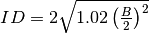

wirecond – Wires in Conduit¶
Introduction¶
WIRES in CONDUIT by George Murphy VE3ERP
This program computes the geometry of a circle enclosing a given
number of smaller circles all of the same size, such as a conduit
or hole surrounding a number of same-size wires or cables.
The calculations are based on formulae published in Machinery's
Handbook, Revised 21st Edition, pages 86-87, adjusted to provide
clearances to ease the near-impossible task of trying to pack the
theoretical maximum number of wires into any appreciable length
of conduit.
Prompt:
Two of the following factors must be known.
Press number in ( ) to identify the UNKNOWN factor.....
(1) conduit inside diameter
(2) wire/cable outside diameter
(3) number of wires/cables
Note:
WARNING
The overriding factor governing the maximum number of conductors
in a conduit is the danger of fire due to heat build-up caused by
current flow through the conductors.
The maximum number of conductors allowed by your local Electrical
Codes may be less than the maximum number of conductors that will
physically fit into the conduit
Analysis¶
This appears to be a Solver for conduit size and wire bundling.
This might be a “closest packing of circles” example.
Here are the three rules for ID, conduit inside diameter, OD, wire/cable outside diameter, and N, number of wires/cables.
Line 640 displays the final results.
Conduit ID (D) and wire OD known:
1000 :REM'.....Conduit ID (D) and wire OD known
1010 VIEW PRINT 3 TO 24:CLS:VIEW PRINT:LOCATE 3
1020 N=0:NW$="* Maximum "
1030 N=N+0.01 :REM'number of complete layers
1040 W=3*N^2+3*N+1:D=(2*N+1)*OD:GOSUB 1090
1050 W=3*N^2+5*N+2:D=(2*N+2)*OD:GOSUB 1090
1060 W=3*N^2+6*N+3:D=(1+2*SQR(N^2+N+1/3))*OD:GOSUB 1090
1070 W=3*N^2+7*N+4:D=(1+SQR(4*N^2+5.644*N+2))*OD:GOSUB 1090
1080 GOTO 1030
1090 IF D>=ID THEN 640
1100 NW=W
1110 RETURN
Conduit ID (ID) and number of wires (NW) known:
1130 :REM'.....Conduit ID (ID) and number of wires (NW) known
1140 VIEW PRINT 3 TO 24:CLS:VIEW PRINT:LOCATE 3
1150 N=0:OD$="* Maximum "
1160 N=N+0.01 :REM'number of complete layers
1170 W=3*N^2+3*N+1:WD=ID/(2*N+1):GOSUB 1220
1180 W=3*N^2+5*N+2:WD=ID/(2*N+2):GOSUB 1220
1190 W=3*N^2+6*N+3:WD=ID/(1+2*SQR(N^2+N+1/3)):GOSUB 1220
1200 W=3*N^2+7*N+4:WD=ID/(1+SQR(4*N^2+5.644*N+2)):GOSUB 1220
1210 GOTO 1160
1220 IF W>=NW THEN 640
1230 OD=WD
1240 RETURN
Wire OD (OD) and number of wires (NW) known:
1260 :REM'.....Wire OD (OD) and number of wires (NW) known
1270 VIEW PRINT 3 TO 24:CLS:VIEW PRINT:LOCATE 3:GOSUB 1380
1280 N=0:ID$="* Minimum "
1290 N=N+1 :REM'number of complete layers
1300 W=3*N^2+3*N+1:WD=(2*N+1)*OD
1310 W=3*N^2+5*N+2:WD=(2*N+2)*OD:GOSUB 1350
1320 W=3*N^2+6*N+3:WD=(1+2*SQR(N^2+N+1/3))*OD:GOSUB 1350
1330 W=3*N^2+7*N+4:WD=(1+SQR(4*N^2+5.644*N+2))*OD:GOSUB 1350
1340 GOTO 1290
1350 IF W>=NW THEN ID=2*SQR(((WD/2)^2)*1.02):GOTO 640
1360 RETURN
Note the (quirky) copy-and-paste nature of the code.
It appears that there are four densest-circle packing arrangements. One of them will meet the goodness-of-fit threshold.
In these calculations, N is a parameter.
W is a number of wires, B and D are bundle size and individual wire diameter.

Each of the solutions amounts to these goodness-of-fit rules.
Conduit ID (D) and wire OD known. Incrment N by 0.01 until the calculated bundle size, B, exceeds the given bundle size, ID. When it does, the previous (N-1) value of W is the best value for NW.
Conduit ID (ID) and number of wires (NW) known. Increment N by 0.01 until the number of wires, W, exceeds the required number of wires, NW. Solve the  for D: . OD is D, the diameter of each wire.
Wire OD (OD) and number of wires (NW) known. Increment N by 1.0 until W exceeds the number of wires, NW. Compute a final bundle size from the target size.

Implementation¶
TBD
Legacy Quirks¶
“Conduit ID (D)” vs. “*Conduit ID (ID)”? It’s simply ID.
Line 1300 is missing the GOSUB 1350. That geometry will never be a solution.
Also, the code between lines 1000 and 1360 suffers from the problem of working around the global variables by creating a distinct set of variables.
A common convention for this is to add digits to the end of the variable name. Here, however, they’re simply a little different.